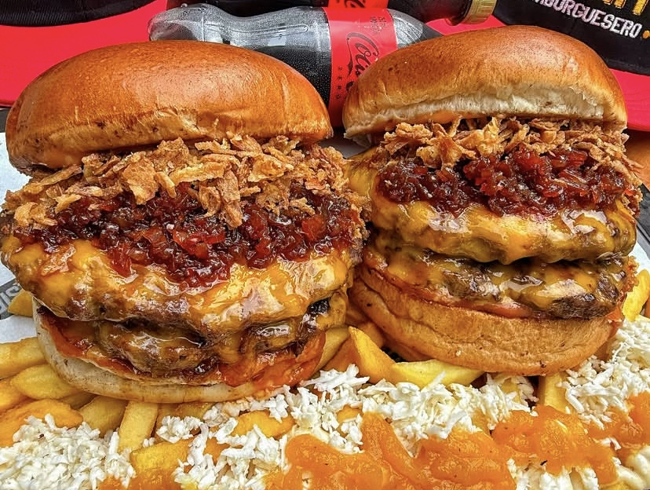
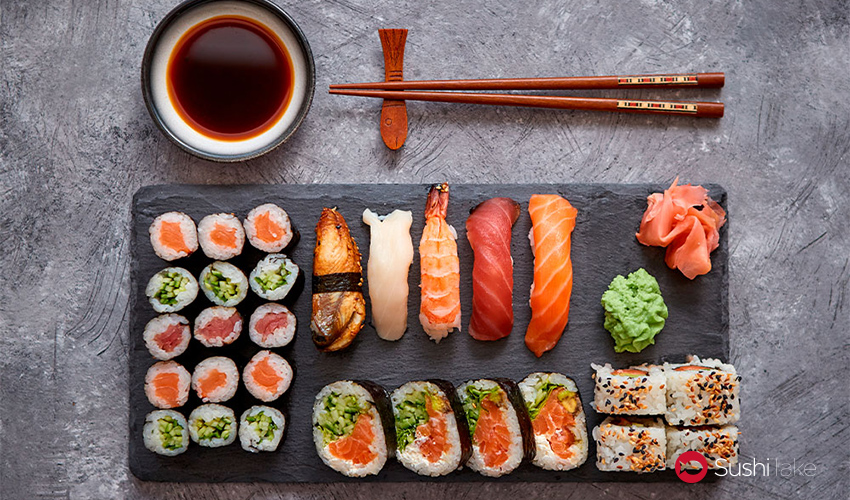
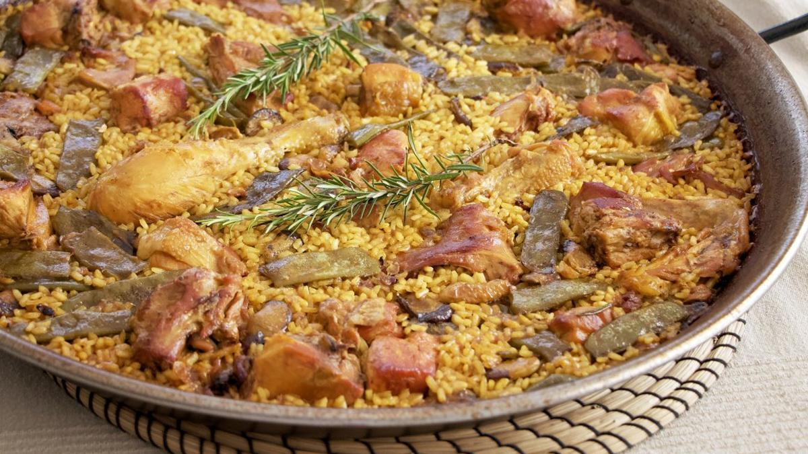
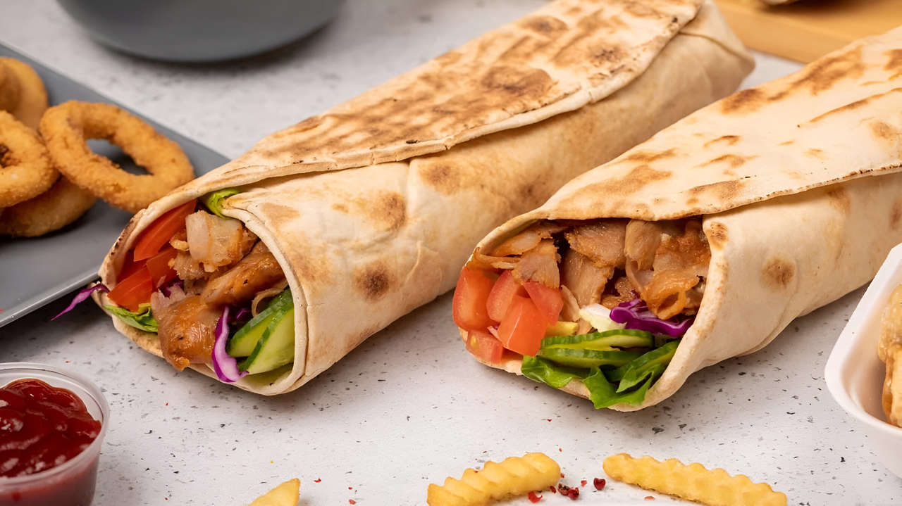
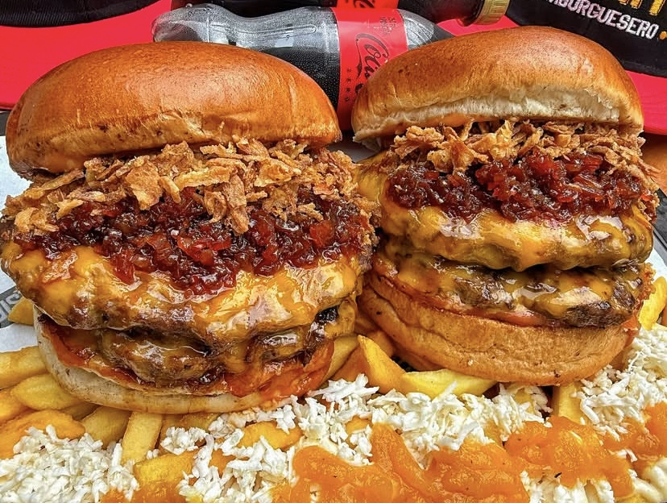
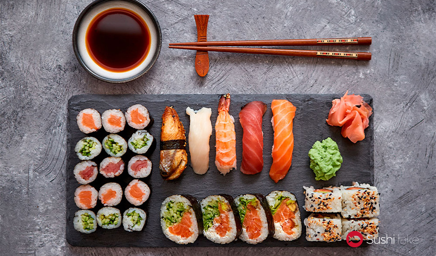
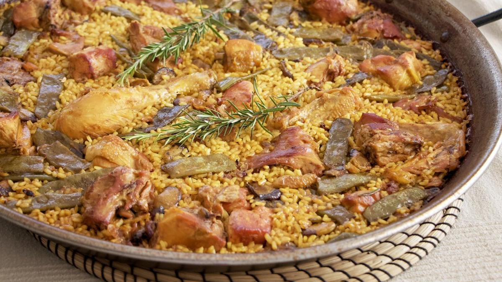
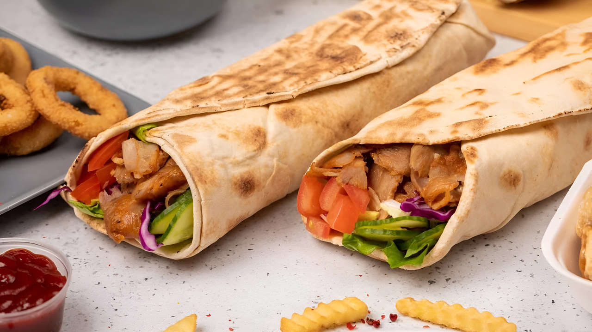
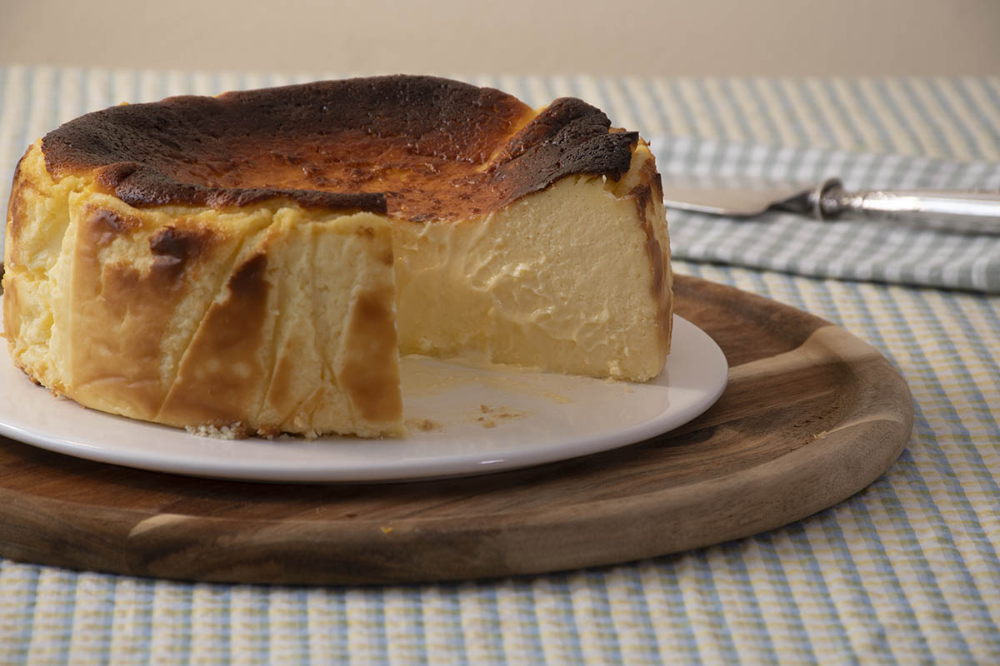
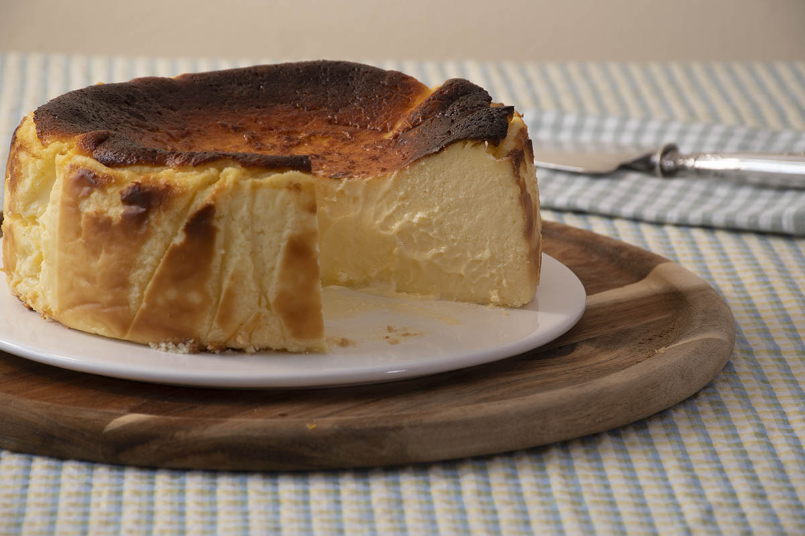

Semana de la Cocina Italiana
Del 1 al 7 de junio, varios restaurantes ofrecen menús especiales. ¡No te lo pierdas!
Bienvenidos a Apperitivo, el lugar donde los amantes de la buena comida encuentran las mejores recomendaciones y reseñas sobre restaurantes, cafeterías y lugares gastronómicos. Ya seas un entusiasta de la cocina local o estés buscando una experiencia culinaria internacional, aquí encontrarás reseñas detalladas, valoraciones de los platillos, y opiniones sinceras de expertos y comensales. Nuestro objetivo es ayudarte a descubrir nuevos sabores, conocer las últimas tendencias gastronómicas y brindarte una guía confiable para elegir el lugar perfecto para tu próxima salida culinaria. ¡Explora, saborea y comparte tu experiencia con nosotros!
| Restaurante | Tipo de Comida | Precio | Valoración |
|---|---|---|---|
| Warynessy | Mediterráneo | Medio | Buena |
| La isla | Tradicional | Barato | Poco buenas |
| L'Ampadini | Italiana | Caro | Muy buenas |
| Las valoraciones están basadas en reseñas de usuarios. | |||
"Muy buenas recomendaciones, encontré un lugar excelente. - Carlos M."
"La plataforma es súper fácil de usar y me ayudó a decidir rápido. - Lucía G."
"Me encantó la variedad de opciones que encontré, hay para todos los gustos. - Fernando R."
"Gracias a las opiniones de otros usuarios, fui al mejor restaurante de la zona. - Diego T."
"La mejor guía para encontrar lugares únicos. Muy recomendada. - María J."
 







 

Del 1 al 7 de junio, varios restaurantes ofrecen menús especiales. ¡No te lo pierdas!
Un nuevo restaurante japonés abre sus puertas en el centro. Descúbrelo.